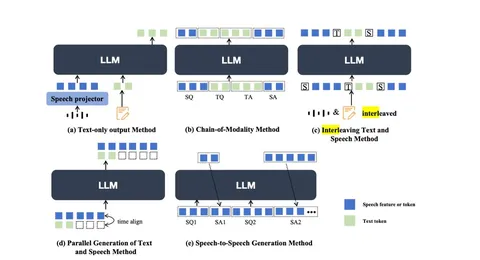

Продолжаем пошагово разбираться в классификации, которую предлагают в большом обзоре актуальных разговорных систем.
В предыдущих сериях: 1, 2.
Классификация по парадигме тренировки: использовали ли постпретрейн, какие задачи решали. Основной тейк этой части классификации довольно очевидный. Текстовые модели добились значительных успехов, а вот остальные (в том числе акустические), пока не могут похвастаться ни размером обучающих корпусов, ни количеством электричества, которое тратят на их обучение. Для выхода из этого тупика, нужно, чтобы при добавлении аудиомодальности тренировочная парадигма позволяла использовать мощности существующих текстовых моделей. Нужно научиться хорошо конвертировать входные запросы в акустические токены, а потом также хорошо оперировать ими. То есть, в обучении должны быть задачи, решение которых требует обуславливаться на аудиоконтекст. Например, задача ASR.
Авторы рассматривают разные способы объединять текстовые и аудиоданные на этапе тренировки (как на картинке). Но одними из самых многообещающих считают интерливинг и chain-of-modality.
Оба этих подхода позволяют учиться на больших корпусах частично структурированных данных, запоминая как структуру аудиоданных, так и взаимное обусловливание речи и текста друг на друга. А вот обучение адаптера в text-only-output-парадигме на большом наборе датасетов из разных задач (как было в SALMONN и Qwen-Audio) авторы считают не очень жизнеспособным. Полноценно обучить синтезу, в отрыве от других задач, нельзя — а значит, диалог с такой моделью проиграет в естественности другим подходам.
Из этой части лично я сделал вывод, что в диалоговых системах критично наличие постпретрейн-стадии для аудиомодальности. Во-первых, хорошие диалоговые системы, представленные в статье, по большей части основаны на этой парадигме. Во-вторых, интуиция подсказывает, что за счëт такой стадии можно выиграть в выразительности синтеза и использовать большие датасеты неструктурированных аудиоданных.
Продолжение следует.
Никита Рыжиков
